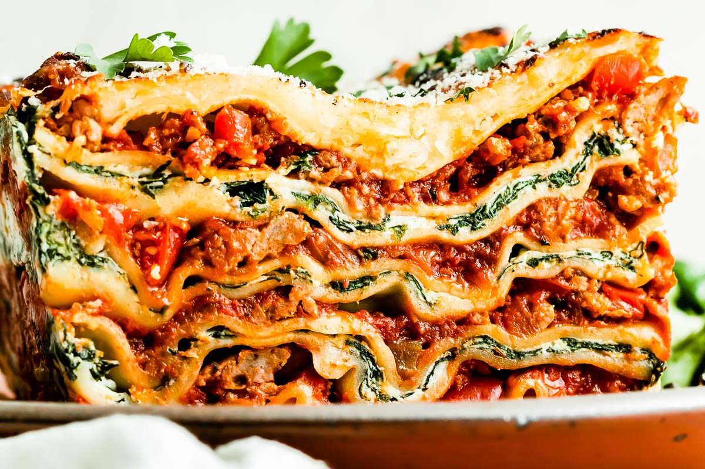

Lasagna

How to make our secret family recipe!
One of my families all time favorite dishes, the recipe having been passed down for generations,
from my great, great, great grandmother. We hope that you will enjoy it as much as we have! Just a few
things before we jump into the "what" and "how". This dish tastes best with high-quality mince from the butcher,
we prefer to buy a chunk then either mince it or have the butcher do it.
Ingredients
- Beef mince - 500g
- Pasta sheets - 1 pack
- Tinned tomatoes
- Mozzarella
- Parmesan
- Fresh Parsley
- Onion - 1 large
- Garlic - 4 cloves
- Egg - 1 medium
Method
- The first step is to make the sauce. You will need start by cooking the onion, once golden,
then add the garlic. Next you will want to add the beef mince making sure you break down any
of the larger chunks. Once the beef is ready stir in the tomatoes, seasoning with pepper, parsley, basil and oregano.
Let it simmer for roughly 1 1/2 hours, until the sauce has picked up the flavour from all the ingredients.
- Whilst the sauce is cooking you can start cooking the pasta sheets, please make sure before putting the pasta in the
water is boiling and salted properly. I find its best to follow the instrucitons on the back in regards to the cooking time
- Once the sauce is ready and the sheets have been boiled you are ready to start layering to perfection. Start with a layer of sauce
then follow with the pasta sheets as to cover the sacue properly. Repeat this step until you are out of sauce, then with the last layers you will
add your parmesan and mozzarella.
- Put in the over for roughly 45minutes, you will see the cheese starting to melt on the top
- After 45mins, pull the lasagna out, leave it for 10mins to cool and enjoy.